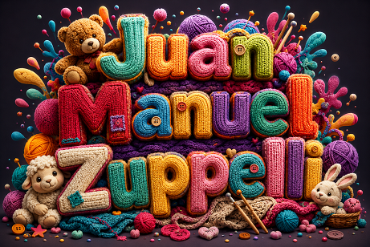

Tipográfico 3D definitiva IA

Manual de Usuario: Generador de Arte Tipográfico 3D de Alto Impacto
1. ¿Para qué sirve este prompt?
Este prompt está diseñado para generar ilustraciones tipográficas en 3D hiperrealistas, comerciales y visualmente explosivas. Transforma palabras simples en obras de arte visual donde las propias letras y su entorno adoptan la textura, estética y concepto del tema que elijas.
Principales usos:- Print on Demand (PoD): Diseño de stickers, remeras, tazas y fundas de celular.
- Marketing y Publicidad: Posters para eventos, portadas de podcasts, banners publicitarios y miniaturas de YouTube.
- Branding e Identidad: Logotipos ilustrados temporales, títulos para campañas o lanzamientos de producto.
- Redes Sociales: Contenido de alto impacto visual (Instagram posts, portadas, historias).
2. Potencial y Ventajas
| Ventaja | Descripción |
|---|---|
| Cohesión Temática Total | Las letras no son planas; están hechas literalmente del material del tema (ej. madera, neon, chocolate, metal). |
| Composición Comercial | El modificador "commercial sticker/poster design" le indica a la IA que cree una composición equilibrada, centrada y lista para producción gráfica. |
| Efecto Tridimensional Real | Incluye iluminación volumétrica, brillos reflectantes (glossy highlights) y detalles táctiles que le dan profundidad y realismo. |
| Alta Adaptabilidad | Sirve para cualquier nicho: desde videojuegos y comida hasta terror, lujo, deportes o naturaleza. |
3. ¿Cómo utilizarlo? (Paso a Paso)
El prompt contiene dos variables clave que debes reemplazar antes de enviarlo a la IA:
Paso 1: Define el texto
Reemplaza [PALABRA 1] [PALABRA 2] por 1 a 3 palabras. (Ejemplo: "GAME OVER", "COFFEE BREAK", "SUMMER VIBES").
💡
Consejo: Las IAs manejan mucho mejor textos cortos (1 a 3 palabras).
Paso 2: Define el tema/material
Reemplaza ambas apariciones de [TU ESTILO O TEMA] por una descripción temática rica.
💡
Consejo: Cuanto más sensorial sea la descripción (texturas, materiales, colores), mejor será el resultado.
4. Recomendaciones de Plataformas y Consejos Pro
- Ideogram: Es la mejor herramienta del mercado para renderizar texto exacto sin errores ortográficos.
-
Midjourney (v6 o superior): Excelente para el realismo y las texturas 3D. Agrega
--ar 1:1para stickers/redes o--ar 3:4para pósteres. - DALL-E 3 (ChatGPT Plus): Muy bueno interpretando conceptos complejos en un solo intento.
-
Fondo transparente o blanco: Si planeas usar la imagen para stickers o remeras, puedes agregar al final del prompt:
, isolated on clean white background
Prompt para copiar
A vibrant and creative typographic artwork centered around the text "[PALABRA 1] [PALABRA 2]". The typography is bold, dynamic, and fully stylized in the theme of [TU ESTILO O TEMA]. The letters have rich 3D textures, tactile materials, glossy highlights, and internal details directly representing [TU ESTILO O TEMA]. Surrounding the text, there are explosive matching decorative elements, thematic props, dynamic splashes, floating icons, and particles that complement the theme perfectly. High-energy composition, volumetric lighting, intricate details, vivid color palette, commercial sticker/poster design, masterfully detailed graphic art, 8k.